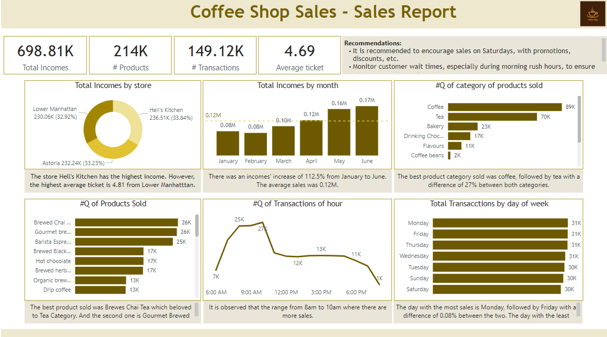

Tool: Power BI
In this project, we delve into the transaction records of Maven Roasters, a prominent coffee shop with three bustling locations across New York City.
We aim to extract actionable insights from the dataset to bolster operational efficiency and facilitate informed decision-making within the business.

Tool: Python
In my Exploratory Data Analysis, I cleaned and preprocessed historical sales data from a supermarket company. Using Matplotlib and Seaborn libraries, I visualized the data to uncover patterns and trends, gaining intuitive insights into sales performance. Additionally, I conducted basic statistical analysis to quantify sales performance and identify potential correlations.
Tool: SQL

The "Restaurant Orders" project shows order data for a fictitious restaurant over a quarter. Includes details about menu items, dates and times of orders.
Analysis recommendations:
Identify the most and least ordered items to understand customer preferences and improve the menu.
Examine top-spending orders to identify popular and profitable items.
Analyze the hours with more or less orders to optimize staff scheduling.
Determine kitchen areas with increasing demand to develop new menu items and attract more customers.
This portfolio offers valuable information to improve the restaurant's performance and offering.